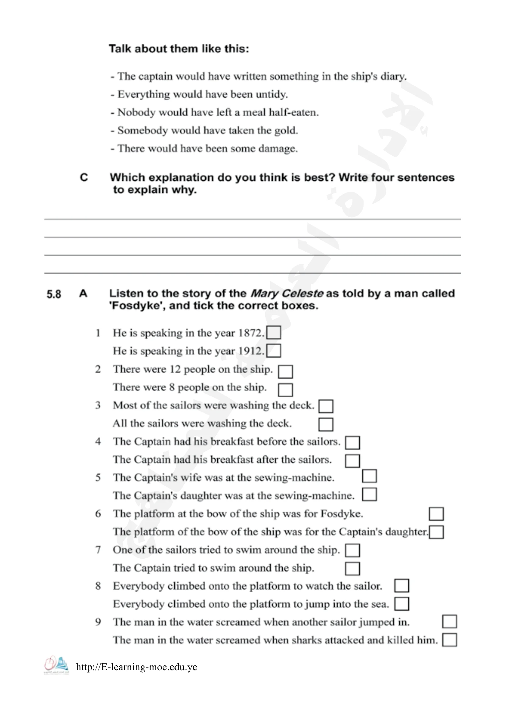

5.8 A Listen to the story of the Mary Celeste as told by a man called 'Fosdyke', and tick the correct boxes. 1 He is speaking in the year 1872. [ ] | He is speaking in the year 1912. [ ] 2 There were 12 people on the ship. [ ] | There were 8 people on the ship. [ ] 3 Most of the sailors were washing the deck. [ ] | All the sailors were washing the deck. [ ] 4 The Captain had his breakfast before the sailors. [ ] | The Captain had his breakfast after the sailors. [ ] 5 The Captain's wife was at the sewing-machine. [ ] | The Captain's daughter was at the sewing-machine. [ ] 6 The platform at the bow of the ship was for Fosdyke. [ ] | The platform of the bow of the ship was for the Captain's daughter. [ ] 7 One of the sailors tried to swim around the ship. [ ] | The Captain tried to swim around the ship. [ ] 8 Everybody climbed onto the platform to watch the sailor. [ ] | Everybody climbed onto the platform to jump into the sea. [ ] 9 The man in the water screamed when another sailor jumped in. [ ] | The man in the water screamed when sharks attacked and killed him. [ ] (WB p. 65) 10 Everybody fell into the sea when the platform broke. [ ] | everybody jumped off the platform to help the men in the sea. [ ] 11 Fosdyke climbed back on the Mary Celeste. [ ] | The Mary Celeste sailed on with nobody abroad. [ ] 12 Nobody on the small island believe Fosdyke. [ ] | Nobody in England believed Fosdyke. [ ] B When Fosdyke got back to England, he was asked a lot of questions. Below are some of the answers he gave. Write the questions. 1 Answer: Only myself. I was the only passenger. 2 Answer: He built it at the bow of the ship. 3 Answer: He said: 'I can swim around the ship with my clothes on.' 4 Answer: Yes. He climbed onto the platform with his wife. 5 Answer: Some were attacked by sharks and others drowned. 6 Answer: I held onto a piece of wood and swam there.
platform of the bow (بند 6)، وبدء السطر بحرف صغير everybody jumped (بند 10)، وnobody abroad بدل aboard (بند 11)، وحذف حرف d في believe Fosdyke (بند 12).[
{
"num": 1,
"question": "Answer 1: 'Only myself. I was the only passenger.'",
"model_answer": "Were there any other passengers on the ship? / How many passengers were on the Mary Celeste?",
"explain_ar": "الإجابة تقتصر على فوسدايك بوصفه الراكب الوحيد (the only passenger)."
},
{
"num": 2,
"question": "Answer 2: 'He built it at the bow of the ship.'",
"model_answer": "Where did he (the captain/carpenter) build the platform?",
"explain_ar": "الإجابة تحدد المكان (at the bow of the ship)، فيبدأ السؤال بـ Where."
},
{
"num": 3,
"question": "Answer 3: 'He said: \"I can swim around the ship with my clothes on.\"'",
"model_answer": "What did the sailor say?",
"explain_ar": "الإجابة تنقل كلام أحد البحارة (He said...)."
},
{
"num": 4,
"question": "Answer 4: 'Yes. He climbed onto the platform with his wife.'",
"model_answer": "Did the Captain climb onto the platform too (with his wife)?",
"explain_ar": "تبدأ بـ Yes لذا يكون سؤالاً تقريرياً بـ Did."
},
{
"num": 5,
"question": "Answer 5: 'Some were attacked by sharks and others drowned.'",
"model_answer": "What happened to the other people (in the sea)?",
"explain_ar": "توضّح مصير البقية بين القروش والغرق."
},
{
"num": 6,
"question": "Answer 6: 'I held onto a piece of wood and swam there.'",
"model_answer": "How did you reach (get to) the island (land)?",
"explain_ar": "تشرح الوسيلة والكيفية (أمسكت بلوح خشب وسبحت إلى هناك)، فيبدأ بـ How."
}
][
{
"num": 1,
"question": "Items in 5.8 A echoed explicitly by printed WB 5.8 B + PB p. 37",
"model_answer": "• #7: 'watch the sailor' in #8 & PB 'one of the sailors' + B #3 ('swim around the ship') points to the sailor trying to swim (#7 opt 1) and everyone climbing onto the platform to watch him (#8 opt 1).\n• #9 & B #5 ('Some were attacked by sharks'): confirms sharks attacked (#9 opt 2).\n• #11 & B #6 ('swam there' + Mary Celeste found empty): confirms the Mary Celeste sailed on with nobody aboard ('abroad' in print) (#11 opt 2).\n• #12 & B heading ('When Fosdyke got back to England...'): confirms nobody in England believed Fosdyke (#12 opt 2).",
"explain_ar": "استنتاج موثّق فقط بما ورد لفظياً داخل إجابات التمرين B نفسهِ."
},
{
"num": 2,
"question": "Items 5.8 A (#1, #2, #3, #4, #5, #6, #10) depending strictly on cassette audio",
"model_answer": "Exact year Fosdyke spoke (1872 vs 1912), exact crew count (12 vs 8), most vs all washing deck, captain breakfast timing, wife vs daughter at sewing-machine (PB p. 37 only said a child's dress!), who the platform was for, and whether the platform broke (#10) require hearing the Teacher's Book audio and are logged in REVIEW_NEEDED.md.",
"explain_ar": "لا نخمّن تفاصيل القصة المختلقة في الكاسيت مثل سنة 1912 أو عدد الطاقم 8/12 دون الشريط الرسمي."
}
]{
"wb_ocr_vs_image": "طُوبقت صفحتا WB ص 64–65 مع wb-065.png وwb-066.png: صُحّحت أخطاء OCR في الأرقام والسطور ('sewine-machine' ← 'sewing-machine', '12 Nobody') وحُفظت الصيغ المطبوعة حرفياً في #6 ('of the bow') و#10 ('everybody') و#11 ('nobody abroad') و#12 ('believe')."
}